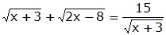

Aufgabe 75 15 --------- 15 --------- |* |² x + 3 + = 15 |-15 x - 12 + = 0 |- x - 12 = - |² x² - 24x + 144 = (2x - 8)(x + 3) x² - 24x + 144 = 2x² + 6x - 8x - 24 | -x² -24x + 144 = x² - 2x - 24 | +24x 144 = x² + 22x - 24 | -144 x² + 22x - 168 = 0 p, q - Formel p = 22 ; q = -168  x1,2 = -11 ± x1,2 = -11 ± x1,2 = -11 ± 17 x1 = -11 + 17 = 6 x2 = -11 - 17 = - 28 Probe für x = 6: 15 --------- 3 + 2 = 5 5 = 5 wahre Aussage, deswegen ist x = 6 eine Lösung der Gleichung. Probe für x = -28 15 --------- 15 ------- Alle Ausdrücke unter den Wurzeln sind negativ, deswegen existiert keine Lösung im Bereich der reellen Zahlen.